Latent Factor Recommender System¶

The NetFlix Challenge
Training data 100 million ratings, 480,000 users, 17,770 movies. 6 years of data: 2000-2005
Test data Last few ratings of each user (2.8 million)
Competition 2,700+ teams, $1 million prize for 10% improvement on Netflix
Evaluation criterion: Root Mean Square Error (RMSE)
Netflix’s system RMSE: 0.9514
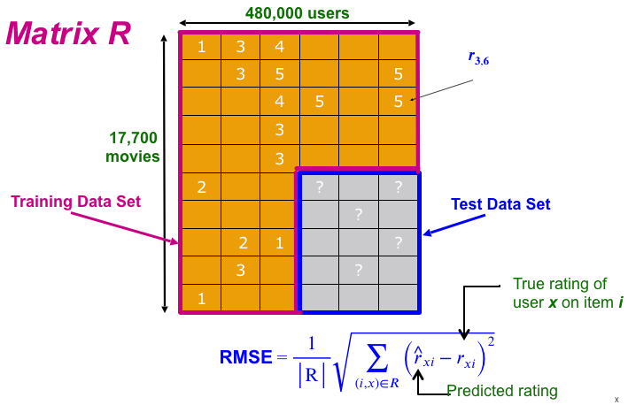
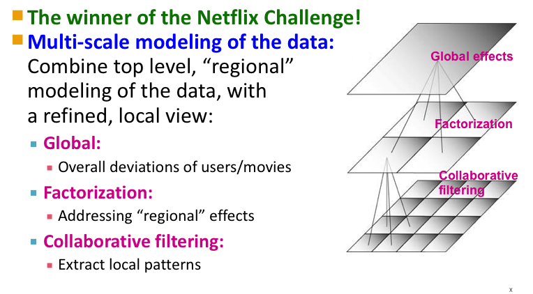
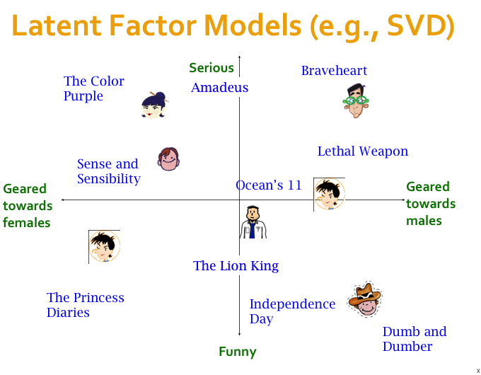
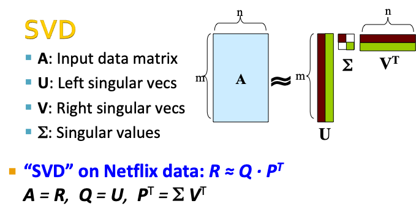
U (m x m) , \(\Sigma\)(m x n), \(V^T\) (n x n)
import numpy as np
A = np.array([[1, 2, 3], [4, 5, 6], [7, 8, 9]])
print(A)
# Singular-value decomposition
U, s, VT = np.linalg.svd(A)
# create n x n Sigma matrix
Sigma = np.diag(s)
# reconstruct matrix
PT = Sigma.dot(VT)
#B = U.dot(Sigma.dot(VT))
print(PT)
[[1 2 3]
[4 5 6]
[7 8 9]]
[[-8.08154958e+00 -9.64331175e+00 -1.12050739e+01]
[-8.29792976e-01 -8.08611173e-02 6.68070742e-01]
[-1.36140716e-16 2.72281431e-16 -1.36140716e-16]]
\(\Sigma\)本来应该跟A矩阵的大小一样，但linalg.svd()只返回了一个行向量的\(\Sigma\)，并且舍弃值为0的奇异值。因此，必须先将\(\Sigma\)转化为矩阵。
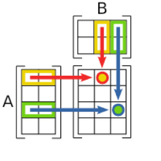
# Singular-value decomposition
A = np.array([[1, 2], [3, 4], [5, 6]])
U, s, VT = np.linalg.svd(A)
# create n x n Sigma matrix
Sigma = np.zeros((A.shape[0], A.shape[1]))
# populate Sigma with n x n diagonal matrix
Sigma[:A.shape[1], :A.shape[1]] = np.diag(s)
# reconstruct matrix
PT = Sigma.dot(VT)
B = U.dot(PT)
print('A = \n', A, '\n')
print('U = \n', U, '\n')
print('Sigma = \n', Sigma, '\n')
print('VT = \n', VT, '\n')
print('PT = \n', PT, '\n')
print('B = \n', B, '\n')
A =
[[1 2]
[3 4]
[5 6]]
U =
[[-0.2298477 0.88346102 0.40824829]
[-0.52474482 0.24078249 -0.81649658]
[-0.81964194 -0.40189603 0.40824829]]
Sigma =
[[9.52551809 0. ]
[0. 0.51430058]
[0. 0. ]]
VT =
[[-0.61962948 -0.78489445]
[-0.78489445 0.61962948]]
PT =
[[-5.90229186 -7.47652631]
[-0.40367167 0.3186758 ]
[ 0. 0. ]]
B =
[[1. 2.]
[3. 4.]
[5. 6.]]
# Singular-value decomposition
A = np.array([[1, 2, 3],
[4, 5, 6]])
U,S,VT = np.linalg.svd(A)
# create n x n Sigma matrix
Sigma = np.zeros((A.shape[1], A.shape[1]))
# populate Sigma with n x n diagonal matrix
if A.shape[1] > S.shape[0]:
S = np.append(S, 0)
Sigma[:A.shape[1], :A.shape[1]] = np.diag(S)
PT= Sigma.dot(VT)
PT = PT[0:A.shape[0]]
B = U.dot(PT)
print('A = \n', A, '\n')
print('U = \n', U, '\n')
print('Sigma = \n', Sigma, '\n')
print('VT = \n', VT, '\n')
print('PT = \n', PT, '\n')
print('B = \n', B, '\n')
A =
[[1 2 3]
[4 5 6]]
U =
[[-0.3863177 -0.92236578]
[-0.92236578 0.3863177 ]]
Sigma =
[[9.508032 0. 0. ]
[0. 0.77286964 0. ]
[0. 0. 0. ]]
VT =
[[-0.42866713 -0.56630692 -0.7039467 ]
[ 0.80596391 0.11238241 -0.58119908]
[ 0.40824829 -0.81649658 0.40824829]]
PT =
[[-4.07578082 -5.38446431 -6.69314779]
[ 0.62290503 0.08685696 -0.44919112]]
B =
[[1. 2. 3.]
[4. 5. 6.]]
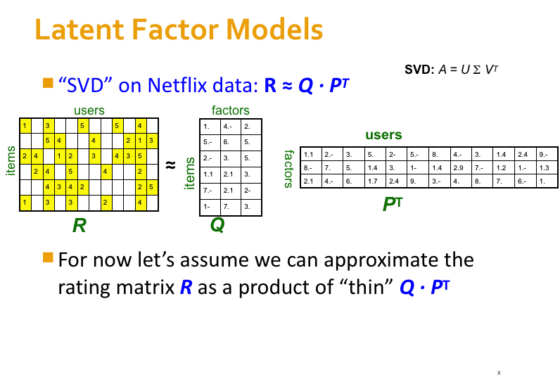
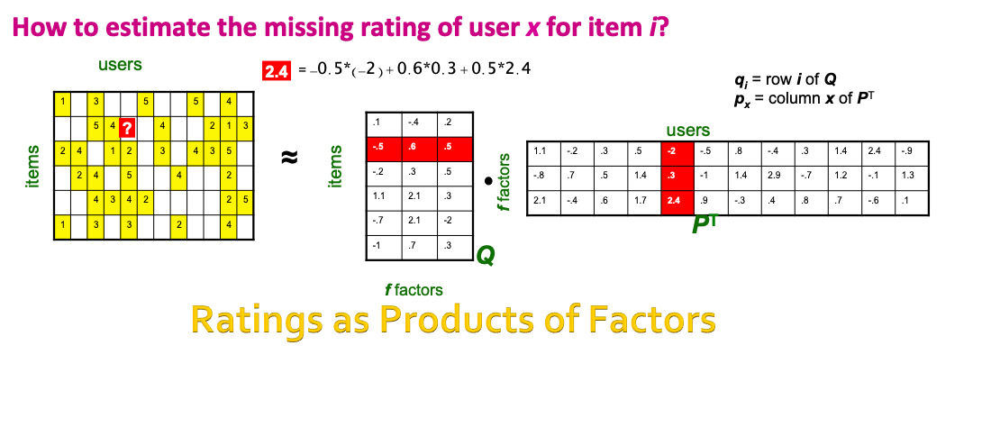
SVD gives minimum reconstruction error (Sum of Squared Errors, SSE)
SSE and RMSE are monotonically related:\(RMSE=\frac{1}{c}\sqrt{SSE}\)
Great news: SVD is minimizing RMSE
# https://beckernick.github.io/matrix-factorization-recommender/
import pandas as pd
import numpy as np
ratings_list = [i.strip().split("::") for i in open('/Users/datalab/bigdata/cjc/ml-1m/ratings.dat', 'r').readlines()]
users_list = [i.strip().split("::") for i in open('/Users/datalab/bigdata/cjc/ml-1m/users.dat', 'r').readlines()]
movies_list = [i.strip().split("::") for i in open('/Users/datalab/bigdata/cjc/ml-1m/movies.dat', 'r', encoding = 'iso-8859-15').readlines()]
ratings_df = pd.DataFrame(ratings_list, columns = ['UserID', 'MovieID', 'Rating', 'Timestamp'], dtype = int)
movies_df = pd.DataFrame(movies_list, columns = ['MovieID', 'Title', 'Genres'])
movies_df['MovieID'] = movies_df['MovieID'].astype('int64')
ratings_df['UserID'] = ratings_df['UserID'].astype('int64')
ratings_df['MovieID'] = ratings_df['MovieID'].astype('int64')
movies_df.head()
| MovieID | Title | Genres | |
|---|---|---|---|
| 0 | 1 | Toy Story (1995) | Animation|Children's|Comedy |
| 1 | 2 | Jumanji (1995) | Adventure|Children's|Fantasy |
| 2 | 3 | Grumpier Old Men (1995) | Comedy|Romance |
| 3 | 4 | Waiting to Exhale (1995) | Comedy|Drama |
| 4 | 5 | Father of the Bride Part II (1995) | Comedy |
ratings_df.head()
| UserID | MovieID | Rating | Timestamp | |
|---|---|---|---|---|
| 0 | 1 | 1193 | 5 | 978300760 |
| 1 | 1 | 661 | 3 | 978302109 |
| 2 | 1 | 914 | 3 | 978301968 |
| 3 | 1 | 3408 | 4 | 978300275 |
| 4 | 1 | 2355 | 5 | 978824291 |
# 注意：使用0填充缺失值
R_df = ratings_df.pivot(index = 'UserID', columns ='MovieID', values = 'Rating').fillna(0)
R_df.head()
| MovieID | 1 | 2 | 3 | 4 | 5 | 6 | 7 | 8 | 9 | 10 | ... | 3943 | 3944 | 3945 | 3946 | 3947 | 3948 | 3949 | 3950 | 3951 | 3952 |
|---|---|---|---|---|---|---|---|---|---|---|---|---|---|---|---|---|---|---|---|---|---|
| UserID | |||||||||||||||||||||
| 1 | 5 | 0 | 0 | 0 | 0 | 0 | 0 | 0 | 0 | 0 | ... | 0 | 0 | 0 | 0 | 0 | 0 | 0 | 0 | 0 | 0 |
| 2 | 0 | 0 | 0 | 0 | 0 | 0 | 0 | 0 | 0 | 0 | ... | 0 | 0 | 0 | 0 | 0 | 0 | 0 | 0 | 0 | 0 |
| 3 | 0 | 0 | 0 | 0 | 0 | 0 | 0 | 0 | 0 | 0 | ... | 0 | 0 | 0 | 0 | 0 | 0 | 0 | 0 | 0 | 0 |
| 4 | 0 | 0 | 0 | 0 | 0 | 0 | 0 | 0 | 0 | 0 | ... | 0 | 0 | 0 | 0 | 0 | 0 | 0 | 0 | 0 | 0 |
| 5 | 0 | 0 | 0 | 0 | 0 | 2 | 0 | 0 | 0 | 0 | ... | 0 | 0 | 0 | 0 | 0 | 0 | 0 | 0 | 0 | 0 |
5 rows × 3706 columns
R = R_df.to_numpy(dtype=np.int16)
user_ratings_mean = np.mean(R, axis = 1)
R_demeaned = R - user_ratings_mean.reshape(-1, 1)
from scipy.sparse.linalg import svds
U, sigma, Vt = svds(R_demeaned, k = 50)
sigma = np.diag(sigma)
all_user_predicted_ratings = U.dot( sigma.dot(Vt)) + user_ratings_mean.reshape(-1, 1)
preds_df = pd.DataFrame(all_user_predicted_ratings, columns = R_df.columns)
preds_df
# each row is a user
# each column is a movie
| MovieID | 1 | 2 | 3 | 4 | 5 | 6 | 7 | 8 | 9 | 10 | ... | 3943 | 3944 | 3945 | 3946 | 3947 | 3948 | 3949 | 3950 | 3951 | 3952 |
|---|---|---|---|---|---|---|---|---|---|---|---|---|---|---|---|---|---|---|---|---|---|
| 0 | 4.288861 | 0.143055 | -0.195080 | -0.018843 | 0.012232 | -0.176604 | -0.074120 | 0.141358 | -0.059553 | -0.195950 | ... | 0.027807 | 0.001640 | 0.026395 | -0.022024 | -0.085415 | 0.403529 | 0.105579 | 0.031912 | 0.050450 | 0.088910 |
| 1 | 0.744716 | 0.169659 | 0.335418 | 0.000758 | 0.022475 | 1.353050 | 0.051426 | 0.071258 | 0.161601 | 1.567246 | ... | -0.056502 | -0.013733 | -0.010580 | 0.062576 | -0.016248 | 0.155790 | -0.418737 | -0.101102 | -0.054098 | -0.140188 |
| 2 | 1.818824 | 0.456136 | 0.090978 | -0.043037 | -0.025694 | -0.158617 | -0.131778 | 0.098977 | 0.030551 | 0.735470 | ... | 0.040481 | -0.005301 | 0.012832 | 0.029349 | 0.020866 | 0.121532 | 0.076205 | 0.012345 | 0.015148 | -0.109956 |
| 3 | 0.408057 | -0.072960 | 0.039642 | 0.089363 | 0.041950 | 0.237753 | -0.049426 | 0.009467 | 0.045469 | -0.111370 | ... | 0.008571 | -0.005425 | -0.008500 | -0.003417 | -0.083982 | 0.094512 | 0.057557 | -0.026050 | 0.014841 | -0.034224 |
| 4 | 1.574272 | 0.021239 | -0.051300 | 0.246884 | -0.032406 | 1.552281 | -0.199630 | -0.014920 | -0.060498 | 0.450512 | ... | 0.110151 | 0.046010 | 0.006934 | -0.015940 | -0.050080 | -0.052539 | 0.507189 | 0.033830 | 0.125706 | 0.199244 |
| ... | ... | ... | ... | ... | ... | ... | ... | ... | ... | ... | ... | ... | ... | ... | ... | ... | ... | ... | ... | ... | ... |
| 6035 | 2.392388 | 0.233964 | 0.413676 | 0.443726 | -0.083641 | 2.192294 | 1.168936 | 0.145237 | -0.046551 | 0.560895 | ... | 0.188493 | -0.004439 | -0.042271 | -0.090101 | 0.276312 | 0.133806 | 0.732374 | 0.271234 | 0.244983 | 0.734771 |
| 6036 | 2.070760 | 0.139294 | -0.012666 | -0.176990 | 0.261243 | 1.074234 | 0.083999 | 0.013814 | -0.030179 | -0.084956 | ... | -0.161548 | 0.001184 | -0.029223 | -0.047087 | 0.099036 | -0.192653 | -0.091265 | 0.050798 | -0.113427 | 0.033283 |
| 6037 | 0.619089 | -0.161769 | 0.106738 | 0.007048 | -0.074701 | -0.079953 | 0.100220 | -0.034013 | 0.007671 | 0.001280 | ... | -0.053546 | 0.005835 | 0.007551 | -0.024082 | -0.010739 | -0.008863 | -0.099774 | -0.013369 | -0.030354 | -0.114936 |
| 6038 | 1.503605 | -0.036208 | -0.161268 | -0.083401 | -0.081617 | -0.143517 | 0.106668 | -0.054404 | -0.008826 | 0.205801 | ... | -0.006104 | 0.008933 | 0.007595 | -0.037800 | 0.050743 | 0.024052 | -0.172466 | -0.010904 | -0.038647 | -0.168359 |
| 6039 | 1.996248 | -0.185987 | -0.156478 | 0.104143 | -0.030001 | 0.105521 | -0.168477 | -0.058174 | 0.122714 | -0.119716 | ... | 0.238088 | -0.047046 | -0.043259 | 0.038256 | 0.055693 | 0.149593 | 0.587989 | -0.006641 | 0.127067 | 0.285001 |
6040 rows × 3706 columns
def recommend_movies(preds_df, user_row_number, movies_df, ratings_df, num_recommendations=5):
# Get and sort the user's predictions
sorted_user_predictions = preds_df.iloc[user_row_number].sort_values(ascending=False)
# Get the user's data and merge in the movie information.
userID = user_row_number + 1
user_data = ratings_df[ratings_df.UserID == userID]
user_full = (user_data.merge(movies_df, how = 'left', left_on = 'MovieID', right_on = 'MovieID').
sort_values(['Rating'], ascending=False)
)
print('UserID {0} has already rated {1} movies.'.format(userID, user_full.shape[0]))
print('Recommending the highest {0} predicted ratings movies not already rated.'.format(num_recommendations))
# Recommend the highest predicted rating movies that the user hasn't seen yet.
potential_movie_df= movies_df[~movies_df['MovieID'].isin(user_full['MovieID'])]
predicted_movie_df = pd.DataFrame(sorted_user_predictions).reset_index()
predicted_movie_df['MovieID'] = predicted_movie_df['MovieID'].astype('int64')
recommendations = (
potential_movie_df.merge(predicted_movie_df, how = 'left', on = 'MovieID').
rename(columns = {user_row_number: 'Predictions'}).
sort_values('Predictions', ascending = False).
iloc[:num_recommendations, :-1]
)
return user_full, recommendations
already_rated, predictions = recommend_movies(preds_df, 0, movies_df, ratings_df, 10)
UserID 1 has already rated 53 movies.
Recommending the highest 10 predicted ratings movies not already rated.
already_rated[:3]
| UserID | MovieID | Rating | Timestamp | Title | Genres | |
|---|---|---|---|---|---|---|
| 0 | 1 | 1193 | 5 | 978300760 | One Flew Over the Cuckoo's Nest (1975) | Drama |
| 46 | 1 | 1029 | 5 | 978302205 | Dumbo (1941) | Animation|Children's|Musical |
| 40 | 1 | 1 | 5 | 978824268 | Toy Story (1995) | Animation|Children's|Comedy |
predictions
| MovieID | Title | Genres | |
|---|---|---|---|
| 311 | 318 | Shawshank Redemption, The (1994) | Drama |
| 32 | 34 | Babe (1995) | Children's|Comedy|Drama |
| 356 | 364 | Lion King, The (1994) | Animation|Children's|Musical |
| 1975 | 2081 | Little Mermaid, The (1989) | Animation|Children's|Comedy|Musical|Romance |
| 1235 | 1282 | Fantasia (1940) | Animation|Children's|Musical |
| 1974 | 2080 | Lady and the Tramp (1955) | Animation|Children's|Comedy|Musical|Romance |
| 1972 | 2078 | Jungle Book, The (1967) | Animation|Children's|Comedy|Musical |
| 1990 | 2096 | Sleeping Beauty (1959) | Animation|Children's|Musical |
| 1981 | 2087 | Peter Pan (1953) | Animation|Children's|Fantasy|Musical |
| 348 | 356 | Forrest Gump (1994) | Comedy|Romance|War |
比较三种矩阵分解的方法
特征值分解 Eigen value decomposition
只能用于方阵
奇异值分解 Singular value decomposition
需要填充稀疏矩阵中的缺失元素
计算复杂度高 \(O(mn^2)\)
梯度下降 Gradient Descent
广泛使用！
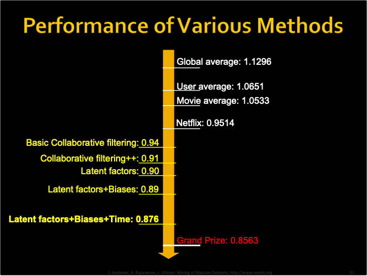
Including bias¶
\(u\) is the global bias, measured by the overall mean rating
\(b_x\) is the bias for user x, measured by the mean rating given by user x.
\(b_i\) is the bias for movie i, measured by the mean ratings of movie i.
\(q_i p_{x}^{T}\) is the user-movie interaction
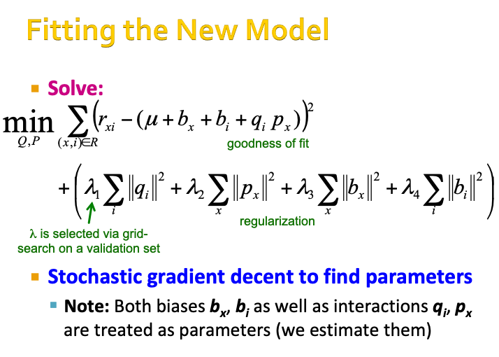
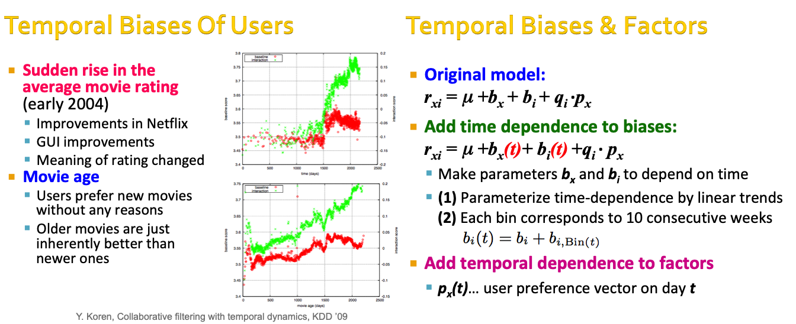
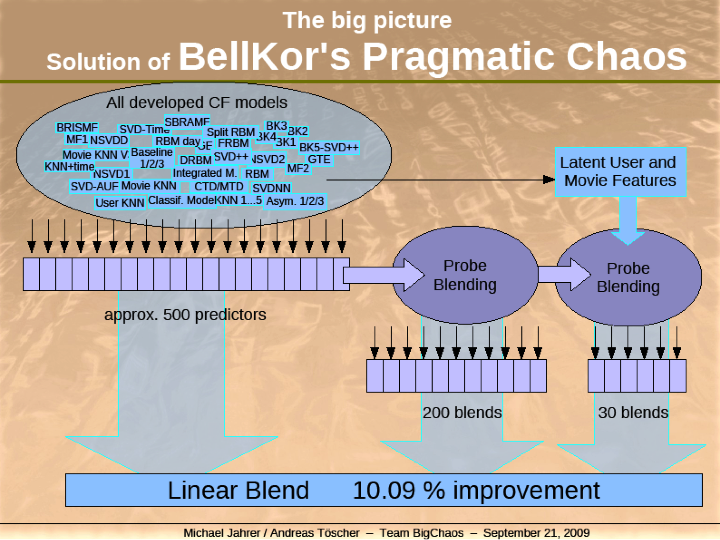

Further reading:¶
Y. Koren, Collaborative filtering with temporal dynamics, KDD ’09
http://www2.research.att.com/~volinsky/netflix/bpc.html
http://www.the-ensemble.com/